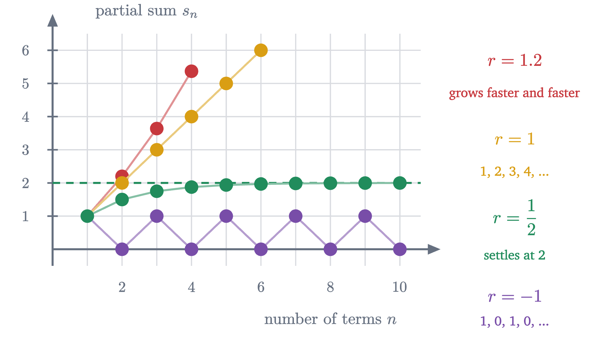
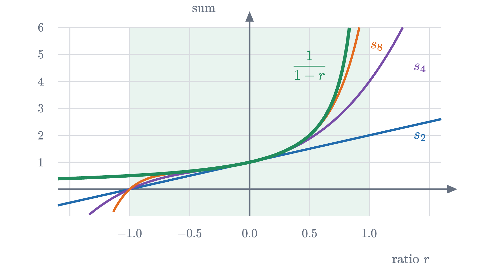
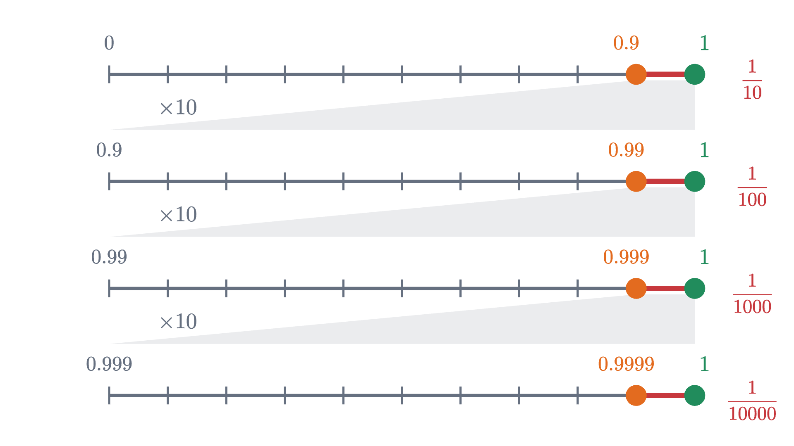

Geometric series, and why 0.999... equals 1
What it means to add infinitely many numbers, when a geometric series has a sum, the formula a/(1 - r) with proof, and why 0.999... is exactly 1.
AssumesCompound interest and where e comes fromWhat is a limit? The epsilon-delta definition, explained
Stand one meter from a wall. Walk half of the way to it, then half of what is left, then half of what is left again, and keep going. Each step leaves some distance still to cover, so it seems you never arrive, however long you walk. And yet people reach walls all the time.
This is one of the paradoxes of Zeno of Elea, about 2500 years old, and behind it is a question with a precise answer: what should it mean to add up infinitely many numbers, here $\frac12 + \frac14 + \frac18 + \cdots$? Nobody can perform infinitely many additions, so the phrase needs a definition. Once it has one, we can prove which sums of this kind exist, find a formula for them, and settle an argument that every class has sooner or later: whether $0.999\ldots$ is equal to 1 or only very close to it.
Half, then half of the rest
Start with the numbers. After one step you have walked $\frac12$ of a meter. After two, $\frac12 + \frac14 = \frac34$. After three, $\frac78$.
The pattern is easier to see in what is left than in what has been walked. Each step covers half of the remaining distance, so the remaining distance is halved: $\frac12, \frac14, \frac18, \ldots$, and after $n$ steps it is $\frac{1}{2^n}$. The distance walked is the rest of the meter:
The square at the top of the page shows the same fact as areas.
Pause and try
How many steps does it take to get within one millimeter of the wall? Within a thousandth of a millimeter?
Show answerHide answer
We need $\frac{1}{2^n} < 0.001$, that is $2^n > 1000$. Since $2^{10} = 1024$, ten steps are enough (and nine are not, because $2^9 = 512$). For a millionth of a meter we need $2^n > 1\,000\,000$, and $2^{20} = 1\,048\,576$, so twenty steps. Each further factor of a thousand costs only ten more steps.
So no finite number of steps reaches the wall, and yet the shortfall can be made smaller than any distance you care to name. Those two facts together are what the phrase “the sum is 1” will mean.
What an infinite sum means
We cannot define $\frac12 + \frac14 + \frac18 + \cdots$ as the result of adding all the terms, because that process has no last step and so no result. What we do have is a list of honest finite sums: $\frac12$, $\frac34$, $\frac78$, and so on. The definition is built on that list.
Read the clauses against the walk. The number $\varepsilon$ is a tolerance, such as one millimeter. The number $N$ is how many steps it takes to get within that tolerance, such as ten. “For all $n \ge N$” says that once inside the tolerance the partial sums stay inside. Nothing in the definition requires any partial sum to equal $S$. The sum of a series is a limit of sums, and is not itself the result of an addition.
Let us verify that our series converges to 1 by this definition. We have $|s_n - 1| = \frac{1}{2^n}$. One fact about powers is needed, and we will use it twice more below.
With $h = 1$ this says $2^n \ge 1 + n > n$. Now let $\varepsilon > 0$ and choose a whole number $N > \frac{1}{\varepsilon}$. For every $n \ge N$ we get $|s_n - 1| = \frac{1}{2^n} < \frac1n \le \frac1N < \varepsilon$. Hence
with the equals sign meaning exactly what the definition says.
Now back to Zeno. The walker’s trouble was the belief that infinitely many steps must take forever. Suppose you walk at one meter per second. The steps then take $\frac12$ s, $\frac14$ s, $\frac18$ s, and the time used after $n$ steps is $1 - \frac{1}{2^n}$ seconds. All of the infinitely many steps happen before the clock reads 1 second, and at that moment you are at the wall. Splitting one second into infinitely many pieces does not make it longer.
Any ratio: a shortcut and a warning
In our series each term is half of the one before. A series in which each term is a fixed multiple $r$ of the one before is called a geometric series, and $r$ is its ratio. The simplest one starts at 1:
There is a quick way to guess its sum. Call the sum $S$. Everything after the first term is $r$ times the whole series:
and solving $S = 1 + rS$ gives $S = \frac{1}{1 - r}$. For $r = \frac12$ this predicts $1 + \frac12 + \frac14 + \cdots = 2$, which is right, since it is 1 more than the series we just summed. For $r = \frac13$ it predicts $\frac32$, and the partial sums $1,\ 1.333,\ 1.444,\ 1.481,\ 1.494$ agree.
Pause and try
Apply the shortcut to $r = 2$. What does it claim about $1 + 2 + 4 + 8 + \cdots$? Is the claim believable? If it is not, which step of the argument is at fault?
Show answerHide answer
The formula gives $S = \frac{1}{1 - 2} = -1$, so it claims $1 + 2 + 4 + 8 + \cdots = -1$. That is absurd: the partial sums $1, 3, 7, 15, \ldots$ are positive and grow without bound, so they do not approach $-1$ or anything else. Every algebraic step was valid for a number $S$. The fault is the first line, “call the sum $S$”, which assumes the series has a sum.
So the shortcut proves only this: if the series converges, its sum is $\frac{1}{1-r}$. It cannot tell us when that happens. To find out we go back to the definition and look at partial sums, which are finite sums and can be handled by ordinary algebra. The same idea, multiplying by $r$ and comparing, works for them without any assumption.
The sum of finitely many terms
Take five terms, $s_5 = 1 + r + r^2 + r^3 + r^4$. Multiplying by $r$ turns each term into the next one.
In symbols, $r s_5 = r + r^2 + r^3 + r^4 + r^5$, and subtracting gives $s_5 - r s_5 = 1 - r^5$, that is $(1 - r)\,s_5 = 1 - r^5$. Nothing here depended on there being five terms.
The hypothesis $r \ne 1$ is needed only for the last division. When $r = 1$ every term is 1 and the sum of $n$ terms is $n$. Test the formula on cases we know: for $r = 2$ and $n = 3$ it gives $\frac{1 - 8}{1 - 2} = 7 = 1 + 2 + 4$, and for $r = \frac12$ it gives $s_n = 2\left(1 - \frac{1}{2^n}\right)$, which approaches 2.
When the series converges
The partial sum is $\frac{1 - r^n}{1 - r}$, and the only part that depends on $n$ is $r^n$. For $r = \frac12$ the powers shrink toward 0 and the partial sums settle at $\frac{1}{1-r}$. For $r = 2$ the powers explode. Everything turns on the behavior of $r^n$.
There is a picture of the formula $\frac{1}{1 - r}$. Take $0 < r < 1$ and stand squares of side $1, r, r^2, \ldots$ in a row. Their top-left corners lie on one straight line (the corner of the $k$th square is at distance $1 + r + \cdots + r^{k-1} = \frac{1 - r^k}{1 - r}$ along the base, at height $r^k$, and these points satisfy $y = 1 - (1 - r)x$). The line reaches the base at $x = \frac{1}{1-r}$, which is where the row of squares ends.
Pause and try
The series $1 - \frac12 + \frac14 - \frac18 + \cdots$ has alternating signs. Is it geometric? Before computing, decide whether its sum should be more or less than $\frac12$, and more or less than 1. Then find it.
Show answerHide answer
It is geometric with $a = 1$ and $r = -\frac12$, and $|r| < 1$, so it converges, to $\frac{1}{1 - (-\frac12)} = \frac{1}{3/2} = \frac23$. The partial sums are $1,\ \frac12,\ \frac34,\ \frac58,\ \frac{11}{16}, \ldots$ They jump back and forth across $\frac23$, each jump half as long as the last, so the sum lies between any two consecutive ones: between $\frac12$ and 1.
Where it fails
Here are the partial sums for four ratios, starting from $a = 1$.

The case $r = -1$ is the series $1 - 1 + 1 - 1 + \cdots$. The shortcut $S = 1 + rS$ assigns it the value $\frac12$, and in the eighteenth century several mathematicians defended that answer. By our definition the partial sums are $1, 0, 1, 0, \ldots$, which approach nothing, so the series diverges and has no sum.
The proof used the fact that the terms of a convergent series have limit 0. The converse is false: terms that shrink to 0 do not guarantee convergence. The standard counterexample is the harmonic series $1 + \frac12 + \frac13 + \frac14 + \cdots$. Group its terms as
Each bracket is more than $\frac12$: the first has two terms that are each at least $\frac14$, the next has four terms that are each at least $\frac18$, and so on. So the partial sum with $2^k$ terms is at least $1 + \frac{k}{2}$, which grows without bound. The terms of a geometric series with $|r| < 1$ do more than shrink. They shrink by a fixed factor each time, and that is why the sum can be controlled.
The next figure shows the convergence and its failure for all ratios at once.

Why 0.999... equals 1
What does the notation $0.999\ldots$ mean? A finite decimal such as $0.999$ is shorthand for the sum $\frac{9}{10} + \frac{9}{100} + \frac{9}{1000}$. A decimal that goes on forever cannot be a finite sum, so it is defined as a series:
(Such a series always converges, because its partial sums never decrease and never exceed 1; this uses the monotone convergence theorem, that an increasing sequence which is bounded above has a limit, from the lesson on the number $e$.) With that definition the equation $0.999\ldots = 1$ is a statement that can be proved.

The proof is three lines long, and people still resist the conclusion. The objections deserve answers.
”0.999... is always a little less than 1.” Each partial sum $0.9$, $0.99$, $0.999$ is less than 1. But $0.999\ldots$ is none of the partial sums. It is one fixed number, the limit of the partial sums, so nothing about it is still “getting there”, and a limit of numbers below 1 can equal 1.
”The difference is $0.000\ldots1$, infinitely small but not zero.” The gaps between the partial sums and 1 are $\frac{1}{10}, \frac{1}{100}, \frac{1}{1000}, \ldots$ If $1 - 0.999\ldots$ were a positive number $d$, it would have to be smaller than every one of these gaps, because the partial sums increase toward $0.999\ldots$ and never pass it. But Bernoulli’s inequality with $h = 9$ gives $10^n \ge 1 + 9n > n$, so $\frac{1}{10^n} < \frac1n$, and $\frac1n < d$ as soon as $n > \frac1d$. No positive real number is smaller than every $\frac{1}{10^n}$. And no decimal has the form “$0.000\ldots1$”, because every digit of a decimal sits at some finite position, and there is no position after all of them.
”Then one number has two different decimals.” It does. Decimals are names for numbers, and some numbers have two names, just as $\frac12$ and $\frac24$ name one fraction. Every positive number with a terminating decimal has a second one ending in nines: $0.5 = 0.4999\ldots$ and $2 = 1.999\ldots$
”I was shown a quicker proof: $\frac13 = 0.333\ldots$, so multiplying by 3 gives $1 = 0.999\ldots$” That argument is correct once you grant that $\frac13 = 0.333\ldots$ and that an infinite decimal can be multiplied digit by digit. Both are true, and both are facts about limits of the same kind as the one in question. It shows the equation is consistent with the rest of arithmetic; the proof is the one above.
Worked examples
Stepping back: the hard step was deciding what an infinite sum is. Once the sum is defined as the limit of the partial sums, the rest is algebra on finite sums and one limit, $r^n \to 0$. The shortcut $S = 1 + rS$ is still worth knowing, as long as you remember what it assumes. The finite formula has a second life in the next lesson, where $1 - r^n = (1 - r)(1 + r + \cdots + r^{n-1})$ becomes the reason that a root of a polynomial always gives a factor.
Check yourself
What is the sum of $1 + \frac23 + \frac49 + \frac{8}{27} + \cdots$?
Problems
Work these on paper before opening the solutions. The first three repeat the lesson’s moves, the next three combine them, and the last two go further.
Problem 1
Find the sum of each series, or explain why it has none. (a) $1 + \frac14 + \frac1{16} + \cdots$ (b) $5 - \frac53 + \frac59 - \cdots$ (c) $\frac23 + \frac49 + \frac8{27} + \cdots$ (d) $1 - \frac32 + \frac94 - \cdots$
Show solutionHide solution
(a) $a = 1$, $r = \frac14$: sum $\frac{1}{1 - 1/4} = \frac43$. (b) $a = 5$, $r = -\frac13$: sum $\frac{5}{1 + 1/3} = \frac{15}{4}$. (c) $a = \frac23$, $r = \frac23$: sum $\frac{2/3}{1/3} = 2$. (d) $r = -\frac32$, and $|r| = \frac32 \ge 1$, so the series diverges. Its terms $1, -1.5, 2.25, \ldots$ grow in size instead of approaching 0.
Problem 2
Compute $1 + 2 + 4 + \cdots + 2^{10}$ and $1 + 3 + 9 + \cdots + 3^5$ with the finite sum formula.
Show solutionHide solution
The first has 11 terms, from $2^0$ to $2^{10}$, so $n = 11$: $\frac{1 - 2^{11}}{1 - 2} = 2^{11} - 1 = 2047$. The second has 6 terms: $\frac{1 - 3^6}{1 - 3} = \frac{729 - 1}{2} = 364$. Check the second directly: $1 + 3 + 9 + 27 + 81 + 243 = 364$.
Problem 3
Write $0.3181818\ldots$ (the block 18 repeats) as a fraction in lowest terms.
Show solutionHide solution
Split off the part that does not repeat: $0.3181818\ldots = \frac{3}{10} + \frac{18}{1000} + \frac{18}{100000} + \cdots$. The series is geometric with $a = \frac{18}{1000}$ and $r = \frac{1}{100}$, with sum $\frac{18/1000}{99/100} = \frac{18}{990} = \frac{1}{55}$. So the number is $\frac{3}{10} + \frac{1}{55} = \frac{33}{110} + \frac{2}{110} = \frac{35}{110} = \frac{7}{22}$. Check: $7 \div 22 = 0.31818\ldots$
Problem 4
For which real numbers $x$ does the series $1 + 2x + 4x^2 + 8x^3 + \cdots$ converge, and what is its sum? Evaluate the sum at $x = \frac14$ and at $x = -\frac14$.
Show solutionHide solution
The series is geometric with $a = 1$ and ratio $r = 2x$. It converges exactly when $|2x| < 1$, that is $-\frac12 < x < \frac12$, and then its sum is $\frac{1}{1 - 2x}$. At $x = \frac14$ the sum is $\frac{1}{1 - 1/2} = 2$ (the series is $1 + \frac12 + \frac14 + \cdots$). At $x = -\frac14$ it is $\frac{1}{1 + 1/2} = \frac23$ (the series is $1 - \frac12 + \frac14 - \cdots$).
Problem 5
How many terms of $\frac12 + \frac14 + \frac18 + \cdots$ are needed for the partial sum to differ from the sum by less than $10^{-6}$? How many terms of $0.9 + 0.09 + 0.009 + \cdots$?
Show solutionHide solution
For the first series the shortfall after $n$ terms is $\frac{1}{2^n}$, and we need $2^n > 10^6$. Since $2^{19} = 524\,288$ and $2^{20} = 1\,048\,576$, we need 20 terms. For the second the shortfall is $\frac{1}{10^n}$, and $\frac{1}{10^n} < \frac{1}{10^6}$ requires $n \ge 7$: seven terms. The series with the smaller ratio converges faster, because the shortfall is multiplied by $r$ at each step.
Problem 6
Achilles runs at 10 meters per second and a tortoise at 1 meter per second. The tortoise starts 9 meters ahead. Zeno argues: by the time Achilles reaches the tortoise’s starting point, the tortoise has moved on; by the time he reaches that point, it has moved on again; so he never catches it. Find the duration of each stage of this description, add the durations, and compare with the answer from ordinary algebra.
Show solutionHide solution
Stage 1: Achilles covers 9 m in $0.9$ s, during which the tortoise moves $0.9$ m. Stage 2: he covers $0.9$ m in $0.09$ s, and the tortoise moves $0.09$ m. Stage 3 takes $0.009$ s, and so on. Each stage is a tenth as long as the one before, so the total time is $0.9 + 0.09 + 0.009 + \cdots = \frac{0.9}{1 - 0.1} = 1$ second (this is $0.999\ldots$ seconds). By algebra: after $t$ seconds Achilles is at $10t$ and the tortoise at $9 + t$, and $10t = 9 + t$ gives $t = 1$. Zeno’s description is accurate. It cuts the one second before the catch into infinitely many stages, all of which fit inside that second.
Problem 7
Here are three “computations” of $S = 1 - 1 + 1 - 1 + \cdots$. (i) $S = (1 - 1) + (1 - 1) + \cdots = 0$. (ii) $S = 1 + (-1 + 1) + (-1 + 1) + \cdots = 1$. (iii) $S = 1 - (1 - 1 + 1 - \cdots) = 1 - S$, so $S = \frac12$. What does the definition say, and what is the common error?
Show solutionHide solution
The partial sums are $1, 0, 1, 0, \ldots$ For any proposed limit $S$, take $\varepsilon = \frac12$: the partial sums 0 and 1 are a distance 1 apart, so they cannot both be within $\frac12$ of $S$, and both occur beyond every $N$. So the sequence has no limit and the series diverges. All three computations begin by treating $S$ as a number and then apply rules of finite arithmetic (regrouping, factoring out $-1$) to it. Those rules were never established for a symbol that stands for no number, and the three contradictory answers show what happens when they are used anyway. In (i) and (ii) the bracketing also silently selects only the even or only the odd partial sums.
Problem 8
Let $T_n = \frac12 + \frac{2}{4} + \frac{3}{8} + \cdots + \frac{n}{2^n}$. (a) By computing $T_n - \frac12 T_n$, show that $T_n = 2 - \frac{n + 2}{2^n}$. (b) Show that $2^n \ge \frac{n(n-1)}{2}$ for $n \ge 2$, and deduce that the series $\frac12 + \frac24 + \frac38 + \cdots$ converges to 2.
Show solutionHide solution
(a) $\frac12 T_n = \frac14 + \frac28 + \cdots + \frac{n-1}{2^n} + \frac{n}{2^{n+1}}$. Subtracting from $T_n$ term by term, the coefficient of each $\frac{1}{2^k}$ is $k - (k - 1) = 1$, so
Doubling, $T_n = 2 - \frac{2}{2^n} - \frac{n}{2^n} = 2 - \frac{n+2}{2^n}$. Check: $T_2 = \frac12 + \frac12 = 1 = 2 - \frac44$. (b) $2^n$ is the number of subsets of a set of $n$ things, and $\frac{n(n-1)}{2}$ is the number of subsets with exactly two members, so $2^n \ge \frac{n(n-1)}{2}$. Hence for $n \ge 2$, $\frac{n}{2^n} \le \frac{2}{n - 1}$, and with $\frac{2}{2^n} < \frac2n$ we get $|T_n - 2| = \frac{n+2}{2^n} < \frac{2}{n-1} + \frac{2}{n}$, which is less than any given $\varepsilon$ once $n$ is large enough. So the partial sums have limit 2. The terms $\frac{n}{2^n}$ are not geometric, but the multiply-and-subtract idea reduces the sum to a geometric one.